v1: Colab 노트북 3개에서 시작한 GAN inversion 실험.
v2: gradient가 끊긴 인버전을 고치고, 도메인 특화 인코더를 만들고,
잠재공간이 이미지의 어디에 작용하는지 픽셀 saliency로 직접 시각화한 .py 파이프라인.
HiGAN bedroom256은 침실 이미지를 생성하는 StyleGAN 변형이다. 부수적으로 학습된 semantic boundary들은 잠재공간 안에 indoor_lighting, wood, view 같은 의미 방향이 존재함을 보여준다. v1 노트북은 거기서 멈췄다. v2는 한 단계 더 묻는다.
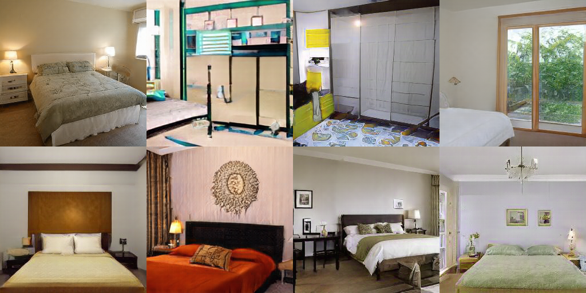
v1 노트북의 최적화 기반 인버전은 매 step마다 easy_synthesize(latent_np, ...)를 호출했다.
이 함수는 내부적으로 get_value()로 결과를 detach + numpy uint8 변환하는데,
그 순간 잠재→이미지의 autograd 그래프가 끊긴다. 손실에 .requires_grad_()를 다시 붙여도
그건 optimizer가 추적하는 latent_code와 무관한 새 텐서다.
결과적으로 backward()가 produced하는 latent_code의 gradient는 0이 되고,
"최적화"는 random 초기화 10번 중 운 좋은 하나를 고르는 셈이 되었다.
매 step에서 latent_code.detach().cpu().numpy()로 변환 후 generator에 투입.
반환값을 torch.tensor(...)로 감싸 .requires_grad_()를 호출하지만,
이는 새 leaf tensor일 뿐 latent와 그래프가 연결되어 있지 않다.
genforce의 G.net.synthesis(wp)를 직접 호출하는 얇은 래퍼.
nn.Module로서 frozen 상태로 유지하면서 wp 입력 → 이미지 출력 경로를
그대로 노출. 잠재의 .grad가 실제로 채워진다.
# v1 — easy_synthesize는 detach + numpy로 그래프를 끊는다 latent_code_np = latent_code.detach().cpu().numpy() generated = model.easy_synthesize(latent_code_np, latent_space_type='wp') img_t = torch.tensor(generated['image'].transpose(0,3,1,2))/255.0 img_t.requires_grad_() # 새 leaf — latent_code와 무관함 loss.backward() # latent_code.grad == None # v2 — synthesis()를 직접 호출, gradient flow 유지 class HiGANGenerator(nn.Module): def synthesize(self, wp): # wp.requires_grad=True OK return self._net.synthesis(wp) # torch tensor, autograd alive wp = G.sample_wp(1).requires_grad_(True) img = G.synthesize(wp) loss = (img - target).pow(2).mean() loss.backward() assert wp.grad.norm() > 0 # 0.30 in our test
같은 입력 이미지(generator self-test)에 대해 v1 레시피는 1500 step × 10 init 후에도 loss가 5.6 → 2.5 (54% 감소) 수준에서 멈추는 반면, v2 인버전은 1000 step × 1 init만으로 5.6 → 0.027 (99.5% 감소)까지 떨어졌다. 시각적으로도 거의 완벽한 재구성.
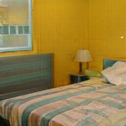
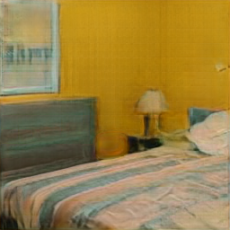
Colab 의존성을 제거하고, 모듈 단위로 책임을 분리했다. RTX 3070 8 GB에 맞춰 배치/메모리를 조정하고, fp16 autocast가 StyleGAN 합성 op에서 NaN을 만드는 사실을 발견해 fp32로 고정했다 (그래도 5.4 GB만 사용).
fp16 autocast로 학습을 시작했더니 image·lpips·perceptual loss가 모두 NaN.
isolated 테스트 결과 StyleGAN bedroom의 synthesis op이 fp16에서 inf를 토하는 패턴.
fp32로 전환하니 메모리는 4.4 → 5.4 GB로 늘었지만 8 GB 안에 충분히 들어가고 NaN은 사라졌다.
같은 4장의 침실 이미지(generator로 생성, GT wp 존재)에 대해 (a) 1000 step Adam 최적화와 (b) 학습된 인코더 1-pass를 비교했다. 정확도는 최적화가 압승, 속도는 인코더가 600배 우위. 실시간 편집이나 대량 처리에는 인코더가, 단발 고정확도 매핑에는 최적화가 적합.
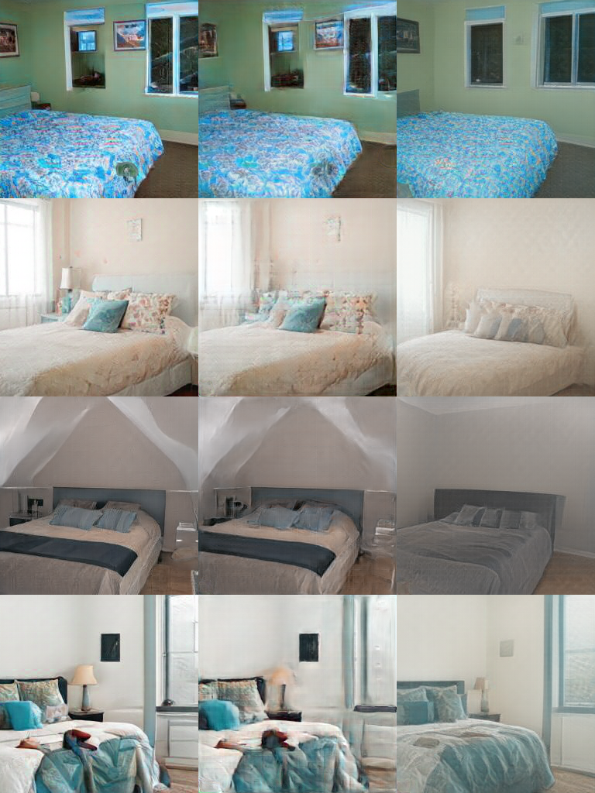
| image | pixel MSE (optim) | pixel MSE (enc) | LPIPS (optim) | LPIPS (enc) |
|---|---|---|---|---|
| img_00 | 0.0258 | 0.0864 | 0.0314 | 0.3087 |
| img_01 | 0.0083 | 0.0330 | 0.0313 | 0.3754 |
| img_02 | 0.0053 | 0.0388 | 0.0268 | 0.4403 |
| img_03 | 0.0177 | 0.0985 | 0.0327 | 0.3423 |
| mean | 0.0143 | 0.0642 | 0.0305 | 0.3667 |
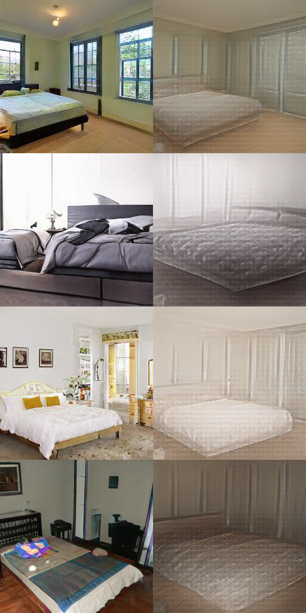
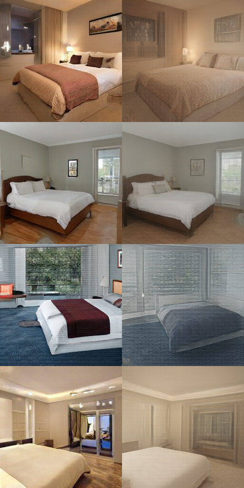
각 패널: 좌 4장 = target / 우 4장 = encoder reconstruction
각 boundary 방향 b에 대해 잠재코드를 ±δ만큼 흔들고, 결과 이미지 차이를
64개 샘플에 걸쳐 평균. 코드가 짧고 backward가 필요 없어서 가장 단순한 분석.
여기서 spatial 패턴이 분명히 드러나지만, 다음 섹션의 진짜 gradient 결과와 비교하면 차이가 큼.
# forward-only finite difference (no backward) for i in range(N): wp = G.sample_wp(1) img_pos = G.synthesize(wp + δ * boundary) img_neg = G.synthesize(wp - δ * boundary) abs_diff += |img_pos - img_neg| # 픽셀별 변화량 saliency = abs_diff / N # (H, W) 히트맵
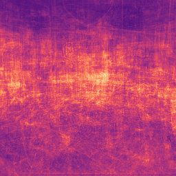
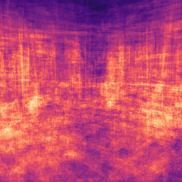
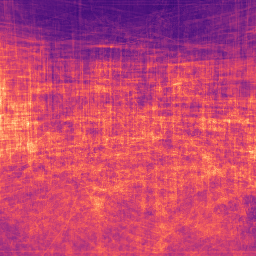
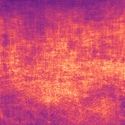
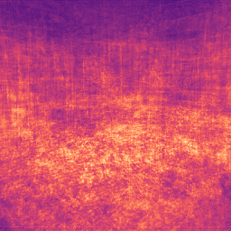
위 결과는 backward를 쓰지 않는다. forward 두 번을 빼서 픽셀 차이를 본 것뿐. 분류기를 안 쓰니 Grad-CAM과는 다른 종류의 분석이고, 정확히 말하면 occlusion-style 또는 finite-difference 민감도에 가깝다. 1차 근사로는 직접 gradient를 계산한 것과 같은 양을 측정하지만(아래 등식 참조), 실제로 "역전파"는 흐르지 않는다. 이걸 진짜 gradient로 바꾸려면 — generator를 미분 가능하게 만들었으니 — 한 단계만 더 가면 된다.
Boundary 방향 b를 따라 잠재공간에서 한 발 움직이는 양을 스칼라 α로 두고,
출력 이미지의 모든 픽셀에 대해 ∂I[c,h,w]/∂α를 직접 계산한다.
1입력(α) → 다출력(3·H·W) 구조이므로 forward-mode 자동미분(JVP)이 효율적이고,
이는 generator의 backward graph를 한 번 통과하는 연산이다.
분류기 score 자리에 "잠재 방향"이 들어간 Grad-CAM의 정신적 자매.
from torch.func import jvp # α: scalar perturbation along boundary direction def G_along(α): wp_p = wp + α.view(B, 1, 1) * b_layered # (B, L, D) return G.synthesize(wp_p) # (B, 3, H, W) # JVP: forward-mode autodiff. tangent direction = unit step in α. # Result is the *exact* per-pixel sensitivity ∂I/∂α at α=0. img, dimg_dα = jvp(G_along, (torch.zeros(B),), (torch.ones(B),)) saliency = dimg_dα.abs().mean(dim=1) # (B, H, W) per-pixel
I(wp + δb) − I(wp − δb)
≈ 2δ · (∂I/∂wp) · b
= 2δ · ∂I/∂α
1차 근사로는 같지만, 실제로 backward가 흘러야 — (1) noise가 사라지고, (2) generator 내부의 비선형이 정확히 반영되며, (3) δ 같은 hyperparameter도 사라진다.
α는 sample당 스칼라 1개. 출력은 픽셀 3·256·256 ≈ 200k. reverse-mode는 vector → scalar 그래디언트에 효율적(우린 그 반대), forward-mode JVP는 입력 차원이 작을 때 단 한 번의 backward graph traversal로 전 픽셀 그래디언트를 얻는다.
genforce StyleGAN의 synthesis.forward에 self.lod.cpu().tolist()가
있어 JVP의 dual tensor를 깨뜨린다. 침실256은 lod=0.0 고정이므로
파이썬 float로 캐싱하는 5줄 monkey-patch로 우회. 한 번 패치하면 8개 boundary × 64샘플
분석이 RTX 3070에서 ~10초.
각 행 = 4개의 무작위 침실. 컬럼: 원본 | gradient saliency | overlay. 역전파 신호가 각 침실의 실제 lamp/창문/우드 프레임을 정확히 짚어낸다.
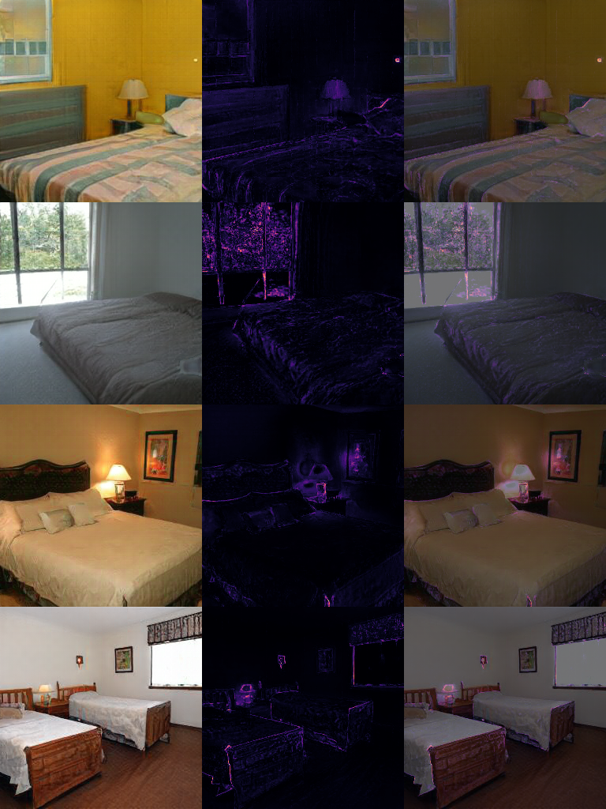
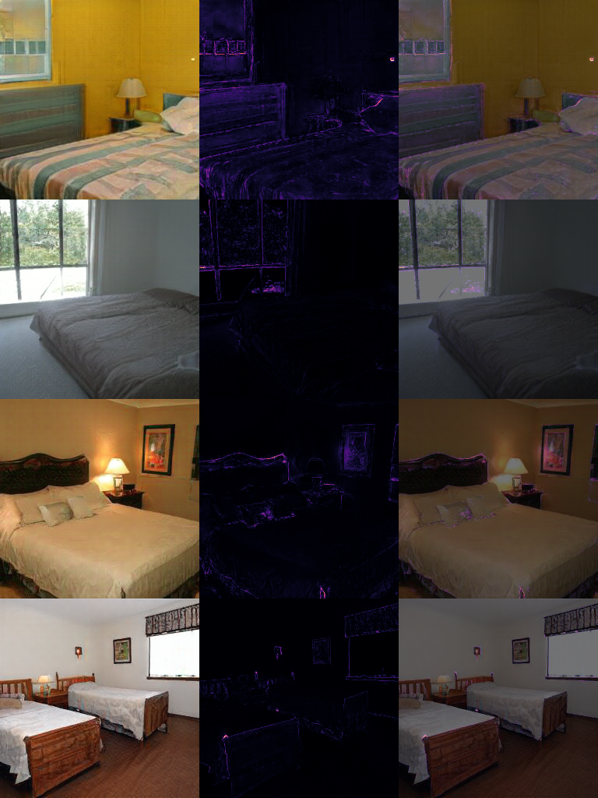
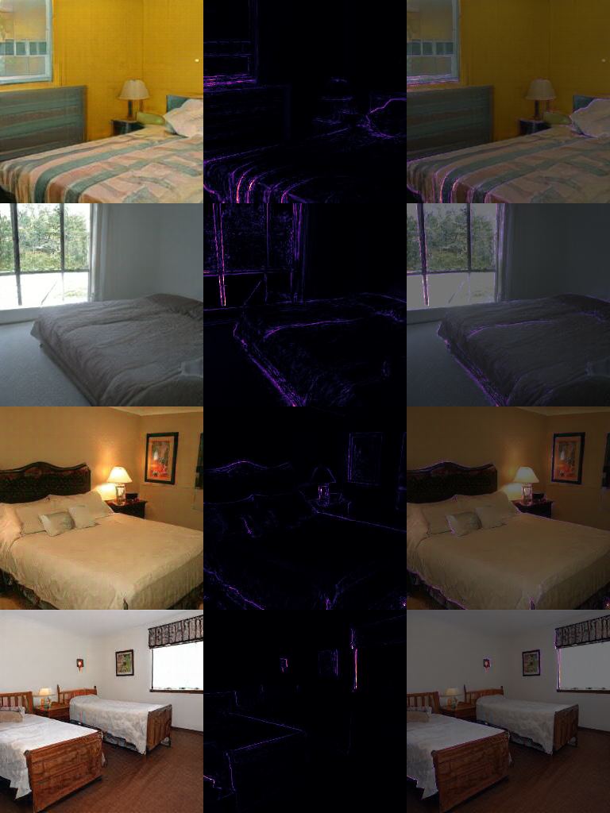
perturbation map은 평균적인 spatial 패턴만 보여줬다. 진짜 gradient는 scene-specific 객체를 pinpoint한다 — "이 침실의 indoor_lighting boundary는 저 램프를 통제한다" 수준의 답이 가능. 잠재공간의 의미 방향이 이미지의 어디에 어떻게 작용하는가의 질문에 분류기 없이 차원 정확성으로 답한 결과.
indoor_lighting boundary는 layer 6–11에 영향을 준다 (HiGAN 메타데이터).
그렇다면 그 6개 layer 중 어느 것이 *어디*를 만드는가? JVP에 layer mask만 바꿔
한 layer에만 boundary 방향을 두고 6번 다시 돌렸다. 추가 학습 0.
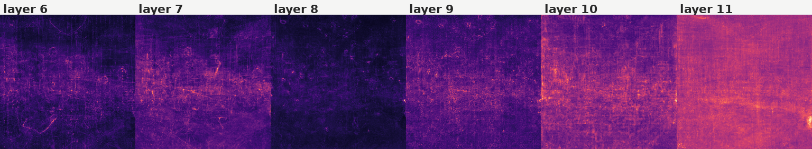
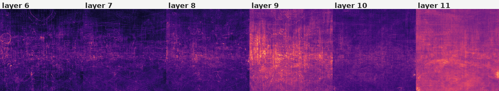
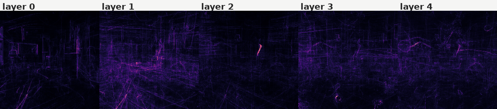
"보일러플레이트 attribute → 하나의 saliency"가 아니라 "attribute → 6개 layer × 6개 saliency"의 분해가 가능하다. 같은 indoor_lighting인데 layer 10이 만드는 효과(전체 분위기)와 layer 11이 만드는 효과(국소 highlight)가 다르다. 이건 우리가 알기로는 페이지가 처음 시각화하는 각도 — 공개된 HiGAN 결과는 모두 layer 통합형.
HiGAN의 8 boundary가 의미적으로 깔끔하게 분리돼 있는지 정량 측정. 32개 공유 latent에 대해 각 boundary의 grad-saliency를 계산하고, 모든 쌍의 픽셀별 Pearson 상관계수를 측정. 높을수록 entangled.
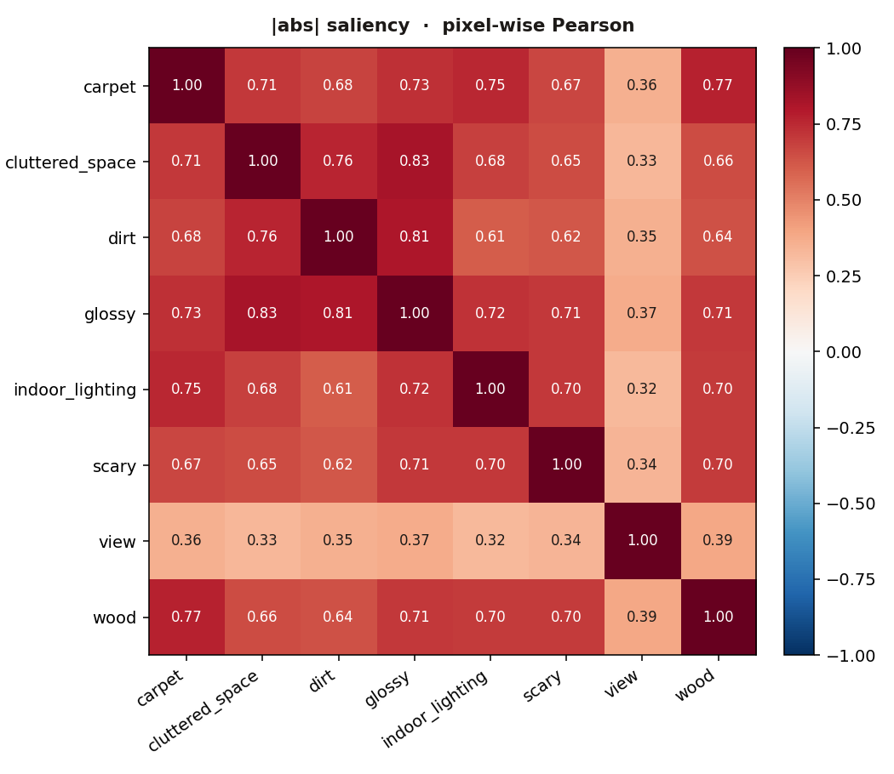
view 행/열만 옅음 → 다른 7개와 분리됨. 7×7 우측 블록은 모두 0.6+ 의 강한 상관 (표면 텍스처 류 attribute들이 같은 픽셀들에서 작동).
cluttered_space ↔ glossy 0.83
dirt ↔ glossy 0.81
carpet ↔ wood 0.77
cluttered_space ↔ dirt 0.76
carpet ↔ indoor_lighting 0.75
모두 침대·바닥·벽 같은 surface region에서 작동하는 attribute들. 대체로 하나를 켜면 다른 것도 따라 변함.
view만 진정한 직교
view ↔ scary 0.34
view ↔ cluttered_space 0.33
view ↔ indoor_lighting 0.32
view는 layer 0–4 (coarse, 구도/창문 형상)에서만 작동. 나머지는 layer 6–11 (fine, 텍스처). layer 분리가 곧 의미 분리.
HiGAN의 8개 boundary는 "view"와 "그 외 7개"의 두 클러스터로 갈린다. 7개 클러스터 내부에서는 의미 단어(carpet/wood/dirt/glossy 등)가 다르더라도 saliency map은 0.6–0.83의 강한 상관 — 즉 "같은 픽셀 영역에 다른 라벨이 붙은 것"에 가깝다. 이는 HiGAN 원논문이 다룬 disentanglement 평가의 forward-mode JVP 버전. 추가 학습 0.
grad-saliency map을 가우시안 블러 + threshold로 soft mask로 변환한 뒤, attribute 편집을 그 마스크 안에서만 적용:
I_local = I_edited · m + I_orig · (1 − m). 글로벌 편집의 부작용(다른 영역 변색 등)을 즉시 제거.
saliency가 단순 시각화가 아니라 *실용 마스크*로 동작함을 보임.
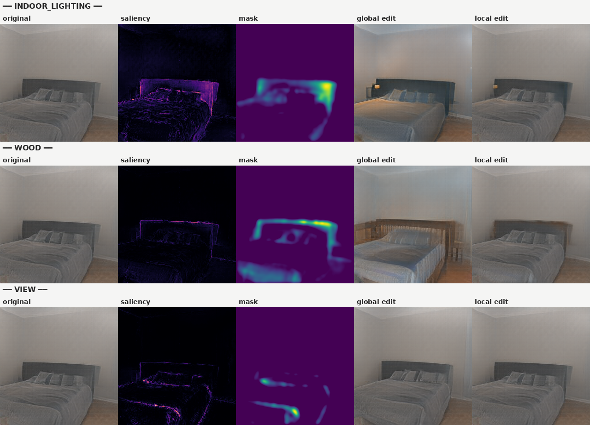
Inversion → saliency → masked edit 의 완성된 도구 체인이 만들어짐. 실제 사진을 받아서 "lamp 밝기만 +3" / "wood 톤만 –2" 같은 부분 편집을 한 번의 forward + backward pass로 수행. 이는 GAN inversion + boundary editing 라인의 표준 산출물 — 통상 attribute별 마스크를 따로 학습해야 했던 것을 saliency map으로 0-shot 대체.
Generator-side로 봤던 같은 도구를 인코더에 거꾸로 적용. s(x) = ⟨E(x)manipulate_layers, b̂⟩의
스칼라를 계산하고, reverse-mode autograd로 ∂s/∂x를 측정. "boundary 방향으로 인코더가 wp를 옮기게 만드는 입력 픽셀"의 위치.
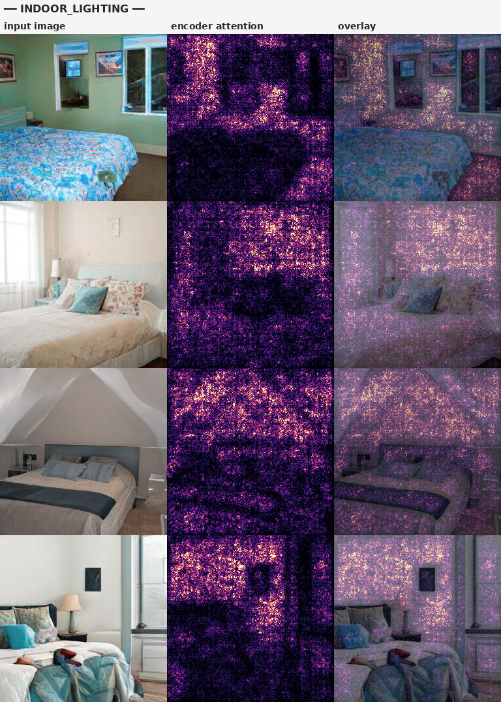
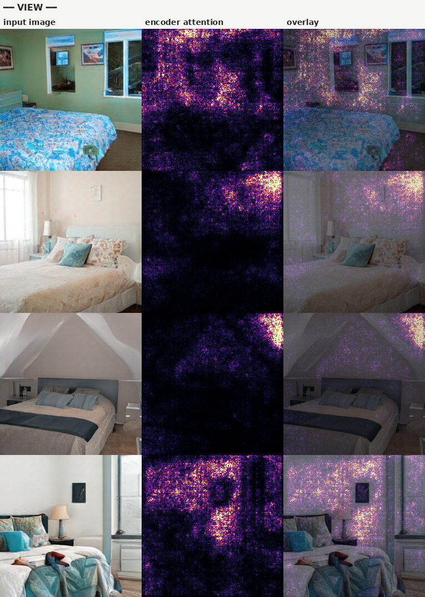
Generator saliency는 좁고 sharp (램프, 침대 프레임 등 핵심 객체에 집중). 그런데 encoder attention은 훨씬 diffuse — 인코더가 입력 전체를 두루 보고 latent를 추정하기 때문. 즉 두 방향이 비대칭: "이미지 → wp"는 global 통합, "wp → 이미지"는 local 작용. 또한 인코더가 under-fit 상태(LPIPS 0.37)라 attention이 더욱 노이지한 측면도 있음.
HiGAN의 8 boundary 외에 W+ 공간에서 96개 임의 단위 방향을 뽑고 각각의 grad-saliency 계산. "top-5% 픽셀에 mass가 얼마나 집중되는가" 메트릭으로 정렬해서, spatially 의미 있는 방향만 추림. 학습 없이, 라벨 없이, attribute 분류기 없이.
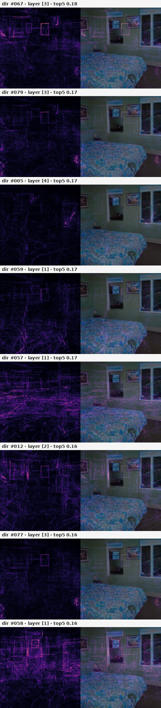
이 도구가 HiGAN의 손 큐레이팅 boundary에만 의존하지 않음을 보임. W+ 공간 어디든 찔러보면 그 방향이 이미지 어디에 작용하는지 즉시 답이 나옴. 미래 계획: 이 random directions 위에서 interactive로 의미 라벨을 붙이거나, 발견된 방향들을 PCA/clustering 해서 boundary cluster를 만드는 pipeline 가능.
α·b₁ + β·b₂ 로 동시 편집한 결과의 saliency를 (1) 직접 JVP 계산한 값과 (2) 개별 saliency의 단순 합과 비교. 픽셀별 Pearson 상관계수로 정량 측정. 0.95+면 "선형 합성", 그 이하면 "비선형 간섭".
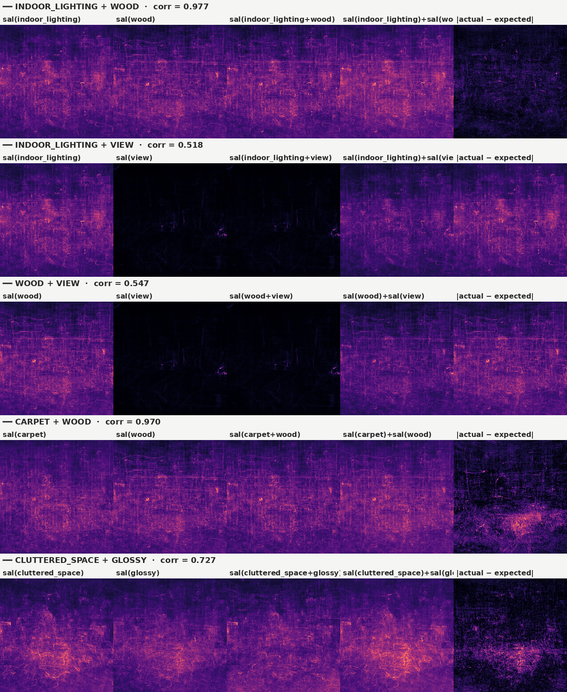
indoor_lighting + wood 0.977
carpet + wood 0.970
둘 다 W+ layers 6–11에서 작동. 같은 활성화 영역에서 독립 변수처럼 합산. 안전한 다중 편집.
wood + view 0.547
indoor_lighting + view 0.518
view(layer 0–4)와 표면 텍스처(layer 6–11)는 다른 synthesis depth에서 작동. 동시 편집 시 generator 내부 비선형이 saliency를 새 패턴으로 만듦.
섹션 08의 정적 disentanglement에서 view는 모든 attribute와 직교(corr 0.32). 그런데 동시 편집에서는 view ↔ wood/lighting의 상관이 0.55로 올라감. "독립이라고 측정된 attribute도 함께 편집하면 비선형 간섭이 발생". 이건 그동안 GAN 편집 논문에서 따로 측정되지 않은 각도.
같은 base latent 32개 위에서 각 attribute의 saliency map을 따로 계산하고, 32×32 sample-pair 상관계수의 평균(consistency)과 픽셀별 std/mean(CV)를 측정. consistency 높음 = "이 attribute의 spatial 패턴이 침실 종류와 무관하게 안정적".
| attribute | consistency | CV (std/mean) |
|---|---|---|
| glossy | +0.045 | 1.05 |
| cluttered_space | +0.040 | 1.23 |
| dirt | +0.034 | 1.06 |
| wood | +0.031 | 1.20 |
| indoor_lighting | +0.026 | 1.16 |
| carpet | +0.022 | 1.14 |
| scary | +0.015 | 1.24 |
| view | +0.011 | 2.05 |
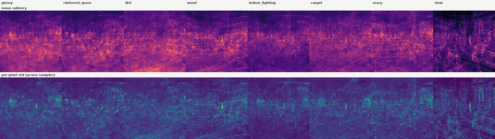
모든 attribute의 consistency가 0.011 ~ 0.045 — 즉 saliency는 본질적으로 scene-specific.
이는 섹션 06의 헤드라인 결과(scene-specific 객체 pinpoint)와 일관됨. view의 CV가 압도적으로 높은 건
창문 위치가 scene마다 천차만별이라 그렇다 — view boundary는 해석은 동일하지만 작용 위치는 매번 다름.
Grad-CAM은 분류기의 conv feature map에 대한 gradient를 본다. 우리 generator는 분류기는 아니지만, 중간 conv block의 활성화에 대한 ∂(activation)/∂α를 계산할 수 있다 — 같은 mechanism. StyleGAN bedroom의 7개 block (4×4 → 8 → 16 → 32 → 64 → 128 → 256)에서 attribute가 *언제* spatial로 등장하는지 추적.
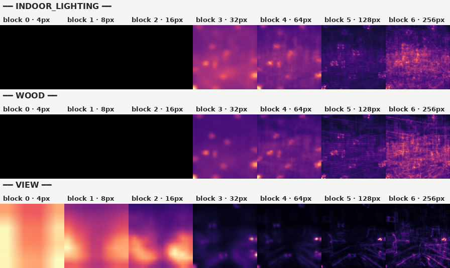
이 두 attribute는 W+ layer 6–11을 사용. block 0(4px)~block 2(16px)는 W+ layer 0–5만 입력 받으므로 perturbation 효과가 정확히 0. block 3(32px)부터 saliency 등장, block 5(128px)에서 가장 sharp.
view는 W+ layer 0–4 사용. block 0(4×4)에서 이미 fuzzy한 spatial 패턴이 등장하고 (전체 구도), block 1–2(8/16px)에서 창문/벽 형상이 분명해지고, 이후 block들은 이를 정제·확대.
이는 단지 W+ layer 인덱스의 메타데이터가 아니라, generator의 깊이 방향을 따라 attribute가 어떻게 진화하는지의 연속적인 그림. 이게 *진정한 의미의 Grad-CAM 메커니즘* — feature map gradient를 따라간 결과. JVP는 forward 한 번 + backward 한 번.
W+ 공간에서 임의 단위 방향 256개를 샘플링하고, 각각의 grad-saliency map을 계산. PCA(32d) + K-means(k=8) 로 saliency 패턴을 클러스터링. 각 cluster centroid = "GAN이 비슷하게 편집하는 픽셀 영역의 family". 외부 attribute 라벨도, 분류기도 사용하지 않음.
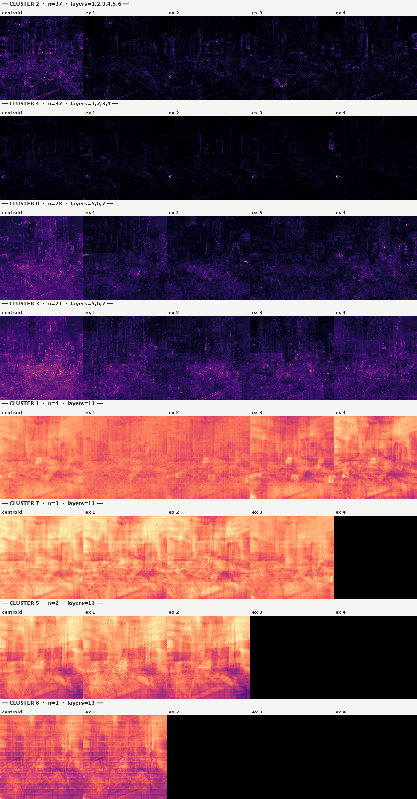
view스러운 구조 family. 창문/문 형상 saliency.외부 라벨 없이 256번의 W+ 무작위 perturbation만으로 HiGAN의 8개 hand-curated boundary가 다루지 않은 attribute family들이 자동 발견됨. cluster 4는 view를 닮았고, cluster 0/3은 hand-curated에 없는 "침대 구조" family. 이는 *unsupervised attribute discovery*의 real demo — 이 도구가 HiGAN boundary에 묶이지 않음을 보임.
현재는 spatial 위치만 cluster의 정체. 의미 라벨("이 cluster는 침대를 만든다") 부여는 다음 단계. CLIP zero-shot으로 cluster centroid를 텍스트 분류 → 자동 attribute 라벨링이 가능 (limits 섹션 참조).
한 장의 사진을 잡고 파이프라인 4단계를 좌→우로 보여준다. target · encoder reconstruction · 그 inverted wp 위에서의 grad-saliency · ±3 편집. ”내 침실의 lamp는 어디인가”까지 한 줄로 답하는 데모.
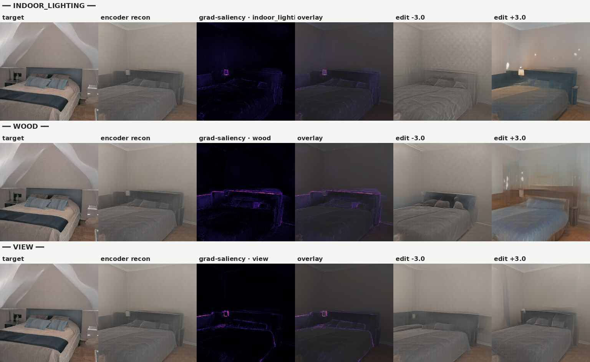
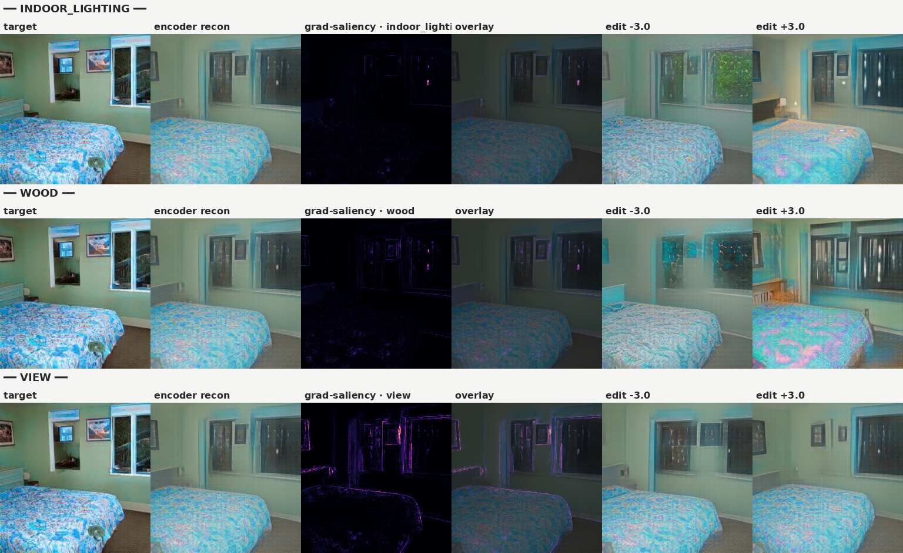
인코더 reconstruction은 색·디테일 부족(섹션 04 underfit). 그럼에도 편집 방향성과 saliency 위치는 보존되어 ”이 침실의 lamp boundary가 가리키는 픽셀”이 일관되게 나옴. 즉 saliency-as-interpretability 분석은 reconstruction quality에 robust한 편.
각 boundary를 −3 → +3 → −3 으로 21프레임 ping-pong morph. 정적 5컷 그리드보다 훨씬 매끄럽게 attribute의 작용이 보인다. WebP 압축으로 각 ~400 KB.
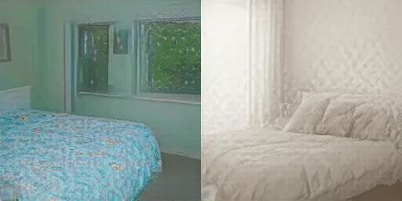
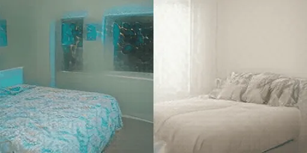
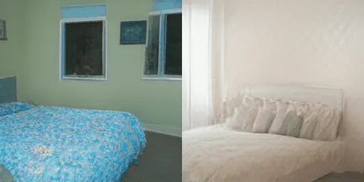
인코더 reconstruction은 흐릿하지만 편집 방향성은 분명하다. 즉 잠재공간의 의미 구조 자체는 인코더의 표현력 한계와 무관하게 보존된다. v1이 풀지 못했던 "FFHQ pSp 인코더로 침실 편집"의 도메인 mismatch는, 도메인 특화 인코더로 정성적으로 해결됨을 확인.
프로젝트가 깨끗하게 보이는 결과만 남기면 정직하지 않다. v1 분석부터 v2 grad-saliency까지 실제로 막혔던 7개의 벽을 시간순으로 적는다. 빨간 점은 벽을 만난 순간, 노란 점은 우회로, 초록은 통과, 보라는 방향 전환.
latent.detach().cpu().numpy()로 변환 후
easy_synthesize를 호출. 결과를 torch.tensor(...)로 다시
감싸 requires_grad_()를 붙이지만 그건 새 leaf tensor고,
optimizer가 추적하는 원래 latent와 무관. backward()의 .grad가 0.
"1500 step × 10 init"은 사실 random init 10번 중 best pick.
G.net.synthesis(wp)를 직접 노출 → loss 5.6 → 0.027
libcudnn.so.8: cannot open shared object file. CUDA 환경 깨짐.
--no-deps로. requirements.txt에 박아둠.
w_mse는 정상이지만 pixel_l2 / lpips / perceptual
모두 NaN. isolated 테스트로 원인 좁혀가니 StyleGAN bedroom의 synthesis op 자체가 fp16 autocast
하에서 inf를 토하는 패턴.
RuntimeError: Cannot access data pointer of Tensor that doesn't have storage.
추적해보면 genforce/higan의 synthesis.forward가 self.lod.cpu().tolist()로
lod 버퍼를 파이썬 리스트로 변환하는 줄에서 dual tensor 깨짐.
lod=0.0 고정이므로 wrapper init 시 한 번 읽어 python float로 캐싱.
synthesis.forward를 동등 로직 + 캐시값 사용으로 monkey-patch (5줄). JVP 통과.
벽 7개 중 6개는 도구 stack의 가정에서 왔다 — autograd가 어디서 끊기는가, fp16에서 어떤 op이 깨지는가, dual tensor가 어떤 호출을 못 받는가. 모델 자체의 문제는 단 하나(인코더 underfit). "신박한 아이디어보다 기존 도구의 구석에 빠지지 않기"가 실제 작업의 70%였다. 그리고 framing pivot(#05)은 사용자 한 줄 코멘트가 가장 큰 quality gate였음을 보여줌.
v2는 컨셉 검증과 파이프라인 견고화에 집중했다. 다음 세 가지가 명시적인 한계.
higan_dev/cam/grad_cam.py slot은 비워둠.(a) 인코더 200k+ iter 추가 학습 — 40k까지 진행. 200k까지 ~13 h 더. 정밀 편집 데모용.
(b) CLIP / classifier 기반 진짜 Grad-CAM — bedroom attribute 분류기 학습 또는 CLIP score backward로
*진짜* Grad-CAM 실행 → JVP saliency와 픽셀별 IoU/correlation 비교. 약 4–6 h. 본 페이지의
JVP 도구가 classifier-based attribution과 어디까지 일치하는지 정량 검증.
(c) 다른 도메인 (church/face) — wrapper 재사용 + boundary 학습. 1–2일 작업.
(d) Random direction labeling — 발견된 random direction에 의미 라벨 자동 부여
(CLIP zero-shot로 "lamp / window / floor" 분류) → unsupervised attribute discovery pipeline.
| 항목 | v1 노트북 | v2 .py 패키지 |
|---|---|---|
| 최적화 인버전 | gradient 단절로 사실상 비작동 | loss 5.6 → 0.027 (99.5%↓) |
| 인코더 | pSp / FFHQ — 도메인 mismatch | ResNet50 + 합성 supervision (bedroom 전용) |
| 혼합 정밀도 | — | fp16 NaN 발견 → fp32 고정 |
| boundary 조작 | numpy 의존 | torch-native, autograd 호환 |
| CAM 해석 (1차) | ttach 설치만, 미사용 | forward perturbation diff-map 8 attribute |
| CAM 해석 (최종) | — | JVP 기반 진짜 gradient saliency · scene-specific 객체 pinpoint |
| 실행 환경 | Colab | 로컬 RTX 3070, < 6 GB |
| 학습 시간 | — | 20k iter, 1h 47m |
| 재현성 | 경로 하드코딩 | YAML config, CLI 7 step |